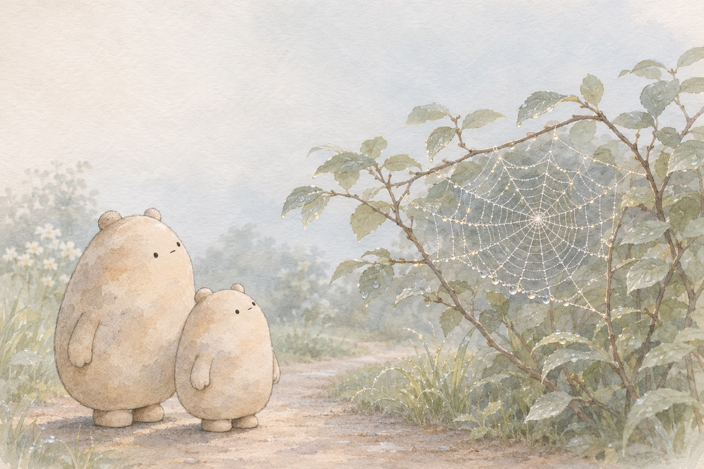

Spider webs, then deeper
Spider Webs

Little Wonderer stopped on the path. "The bush is wearing lace," the little one whispered. Big Wonderer tipped its head. Overnight the web was almost invisible. Cool air left dew beads on the silk, and the beads caught the morning light. As the day warms, many drops shrink. Dew helps us see; it is not the spider's glue.

Many orb webs share three parts. The hub is the small center. Radii are the straight spokes. The capture spiral winds around them. On many webs the radii stay dry and strong, while the spiral holds tiny glue beads. Spiders often walk the dry lines. Not every spider builds an orb, so what you find outside may look different.

Spiders make more than one silk. Dragline silk is strong for bridges and safety lines. Capture silk is for catching. Some spiders coat the spiral with glue droplets. Others comb out a dry, woolly silk with a cribellum plate. That woolly silk can snag without sticky glue. Researchers still compare how each kind works in wind and rain.
- orb
- a roundish wheel-shaped web with spokes and a spiral
- radii
- the straight spoke lines that run from the hub outward
- spiral
- the winding line that circles the spokes
- silk
- the strong thread a spider makes from its body
- cribellum
- a tiny spinning plate that helps make woolly catch silk
- vibration
- a tiny shake that can travel along a line of silk